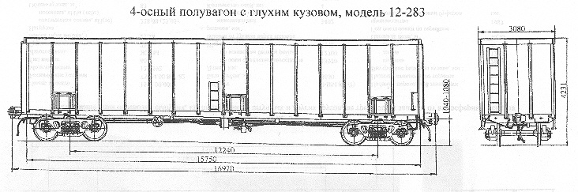

Назначение: для перевозки технологической щепы и короткомерной древесины
Параметры
| Номер проекта | 283.00.000-00 |
| Технические условия | ТУ 24.05.01.073-92 |
| Модель вагона | 12-283 |
| Тип вагона | |
| Изготовитель | АО "Алтайвагон" |
| Грузоподъемность, т | 67 |
| Масса тары вагона, т | 27 |
| Нагрузка: статическая осевая, кН(тс) |
230,5(23,5) |
| погонная, кН/м(тс/м) | 54,3(5,54) |
| Объем кузова, м³ | 132 |
| Скорость конструкционная, км/ч | 120 |
| Габарит | 0-ВМ(0-Т) |
| База вагона, мм | 12240 |
| Длина, мм: по осям сцепления автосцепок |
16970 |
| по концевым балкам рамы | 15750 |
| Ширина максимальная, мм | 3080 |
| Высота от уровня верха головок рельсов, мм: максимальная |
4231 |
| Количество осей, шт. | 4 |
| Модель 2-осной тележки | 18-100 |
| Наличие переходной площадки | нет |
| Наличие стояночного тормоза | есть |
| Внутренние размеры кузова, мм: ширина |
2790 |
| длина | 15750 |
| высота | 2994 |
| Количество люков в боковых стенах для очистки полувагона от остатков перевозимого груза, шт. | 6 |
| Разиер люков, мм | 615х835 |
| Площадь пола, м² | 43,9 |
| Год постановки на серийное производство | 1992 |
| Возможность установки буфера | нет |